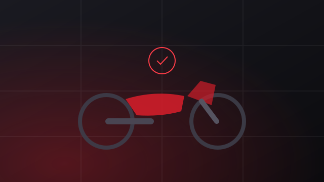

۱۵ مرداد ۱۴۰۴ · مجلهی موتوسنج

۱. قبل از هر چیز، سند را ببینید
پیش از آنکه دور موتور بچرخید و به رنگ و لعابش نگاه کنید، سند را بخواهید. شمارهی موتور و شمارهی تنه باید دقیقاً با چیزی که روی خود موتور حک شده یکی باشد. اگر فروشنده به هر بهانهای سند را نشان نداد، همانجا خداحافظی کنید؛ بقیهی بررسیها بیفایده است.
۲. موتور را سرد ببینید
همیشه از فروشنده بخواهید موتور را قبل از رسیدن شما روشن نکند. موتور گرم، بسیاری از عیبها را پنهان میکند: صدای تایم شل، دود سفید ابتدای استارت و سختی روشن شدن. اگر رسیدید و موتور گرم بود، به آن مشکوک باشید.
۳. به دود اگزوز نگاه کنید
دود سفید غلیظ و مداوم یعنی روغنسوزی. دود سیاه یعنی مخلوط بیش از حد پرمایه. کمی بخار در هوای سرد طبیعی است، اما اگر بعد از چند دقیقه کارکرد هم دود ادامه داشت، هزینهی تعمیر را در قیمت لحاظ کنید.
۴. صدای موتور را در چند دور مختلف بشنوید
در دور آرام گوش کنید، بعد چند بار دور را بالا ببرید. تقتق فلزی از بالای موتور معمولاً به تنظیم سوپاپ یا زنجیر تایم برمیگردد و صدای خشک از پایین موتور میتواند نشانهی مشکل یاتاقان باشد — این یکی گران تمام میشود.
۵. کلاچ و گیربکس را امتحان کنید
دندهها باید نرم و بدون صدای زیاد جا بروند. اگر کلاچ سر میخورد (دور موتور بالا میرود ولی سرعت زیاد نمیشود) یا دنده میپرد، هزینهی پیشرو قابل توجه است.
۶. لاستیکها را از روی تاریخ تولید بخوانید
روی دیوارهی لاستیک یک عدد چهاررقمی هست؛ دو رقم اول هفته و دو رقم بعدی سال تولید است. لاستیک بالای پنج سال، حتی اگر آجش سالم باشد، سفت و ناایمن شده است.
۷. ضخامت رنگ را حس کنید
بدون ابزار هم میشود سرنخ گرفت: اختلاف رنگ بین قطعات، پاشش رنگ روی لبهی پیچها، زبری سطح زیر انگشت و چسبهای تازه، همگی نشانهی رنگشدگی هستند.
۸. تقارن دوشاخ و شاسی را بررسی کنید
از روبهرو، در راستای چرخ جلو بایستید و ببینید چرخ با فرمان همراستاست یا نه. خمیدگی دوشاخ، رد یک تصادف جدی است که با تعویض قطعات ظاهری پنهان میشود.
۹. زیر موتور را نگاه کنید
اگر امکانش هست، موتور را روی جک بگذارید و زیرش را ببینید. لکهی روغن تازه، خطوخش عمیق روی کارتل و زنگزدگی غیرعادی، همه چیزهایی هستند که از بالا دیده نمیشوند.
۱۰. برق و چراغها را تکتک تست کنید
نور بالا و پایین، راهنماها، چراغ ترمز (هم با دسته و هم با پدال)، بوق و کیلومترشمار. یک ایراد کوچک برقی معمولاً نشانهی سیمکشی دستخورده است.
۱۱. کارکرد را با وضعیت ظاهری بسنجید
اگر عدد کیلومترشمار پایین است اما نشیمنگاه ساییده، دستهها براق و صفحهی زنجیر فرسوده است، عدد را باور نکنید. تناسب بین کارکرد و فرسودگی، مهمترین سرنخ است.
۱۲. سرویسهای انجامشده را بپرسید
فاکتور سرویسها، تعویض روغنهای منظم و تاریخ آخرین تنظیم موتور نشان میدهد مالک قبلی چقدر به موتور رسیده است. موتور با مالک دقیق، همیشه ارزش بیشتری دارد.
اگر میخواهید مطمئن باشید چیزی از قلم نیفتاده، کارشناسی حرفهای همین کار را با ابزار دقیق و چکلیست ثابت انجام میدهد. یک تماس بگیرید: ۰۹۱۲ ۳۴۵ ۶۷۸۹